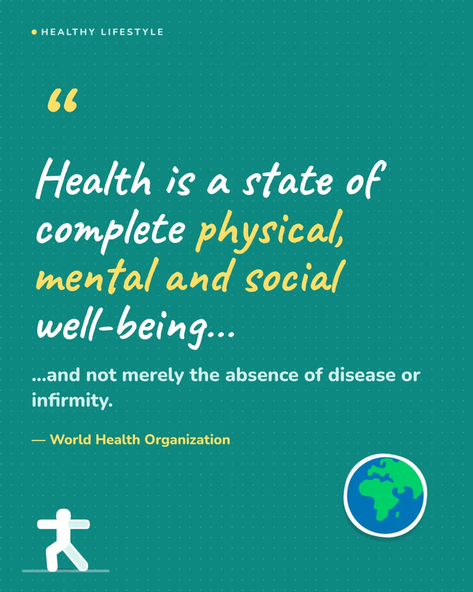
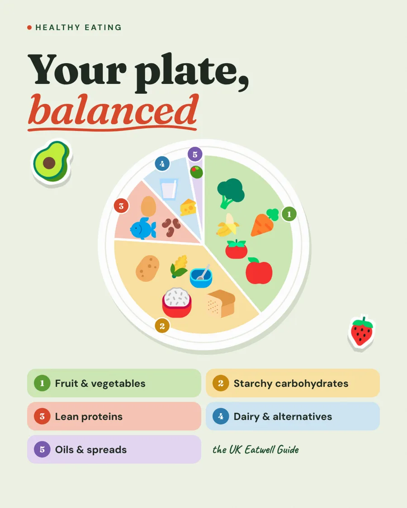
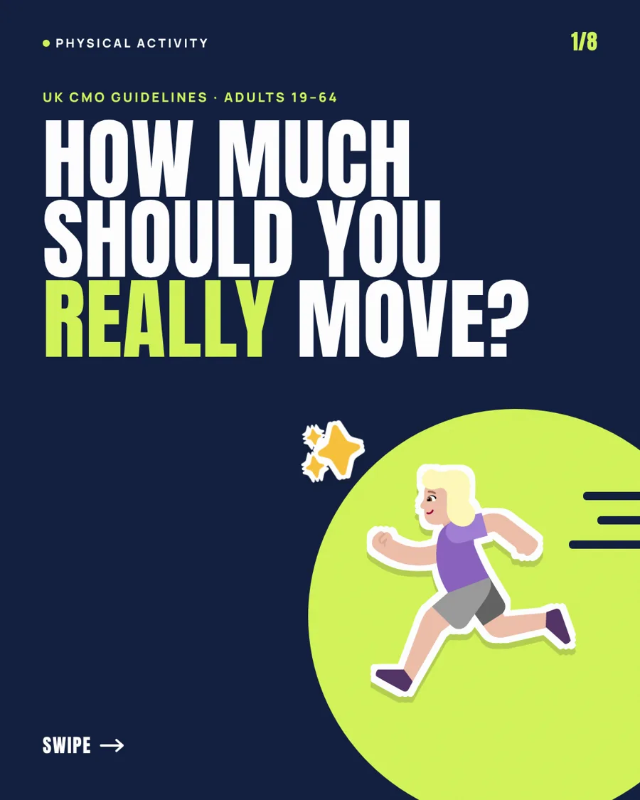
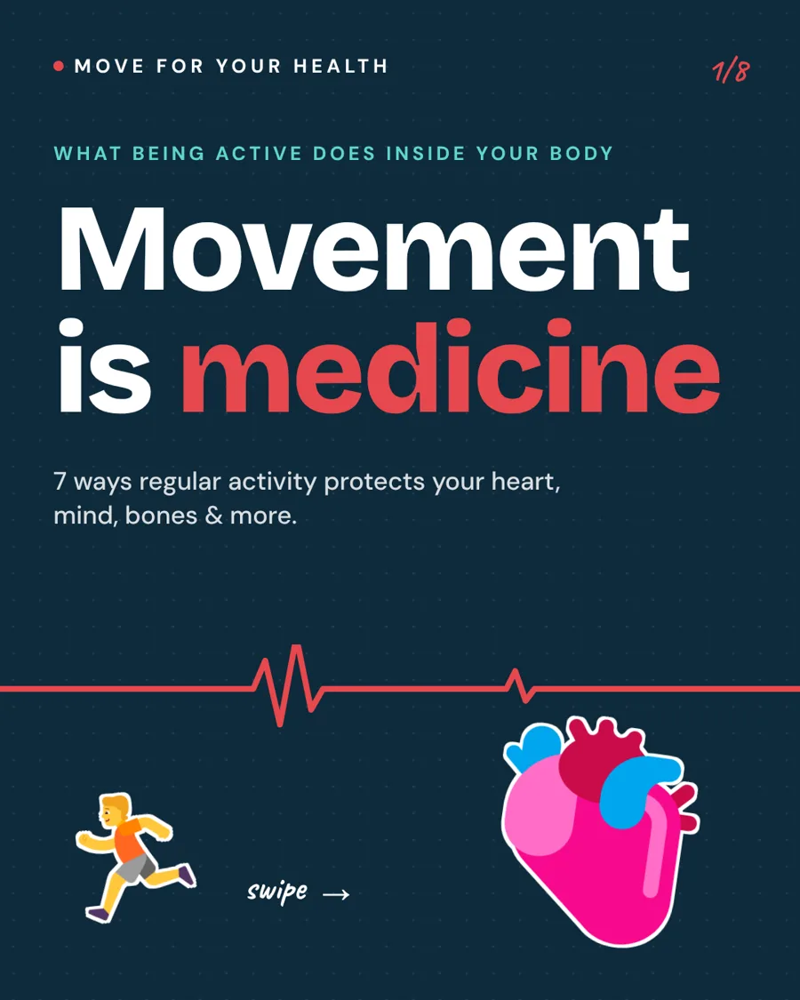
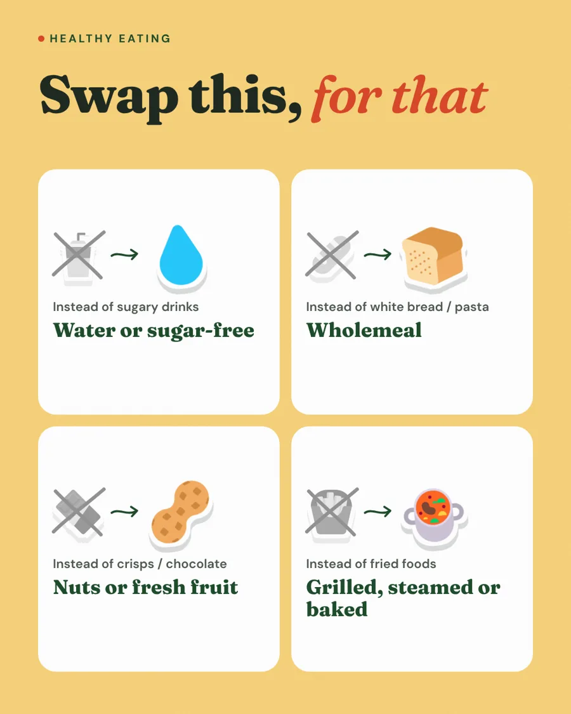
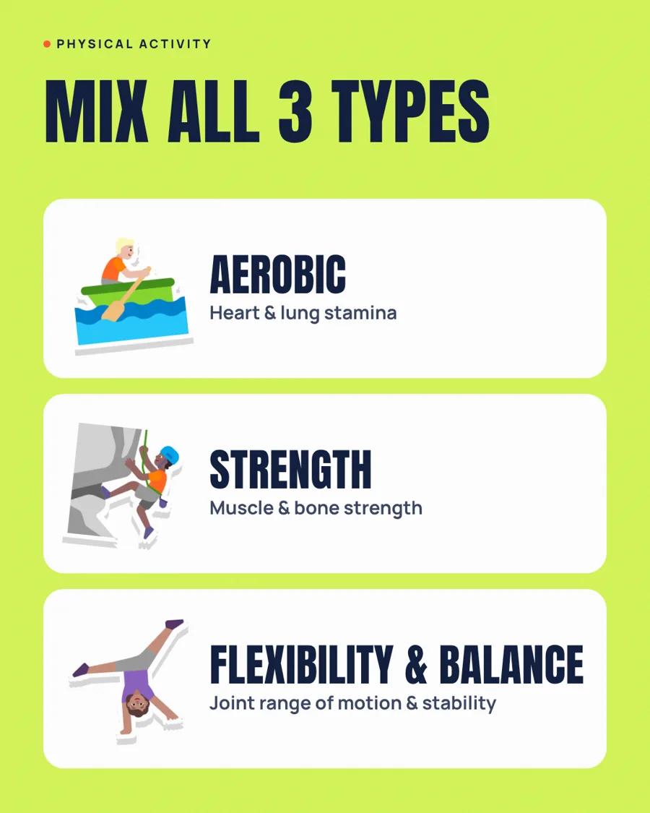
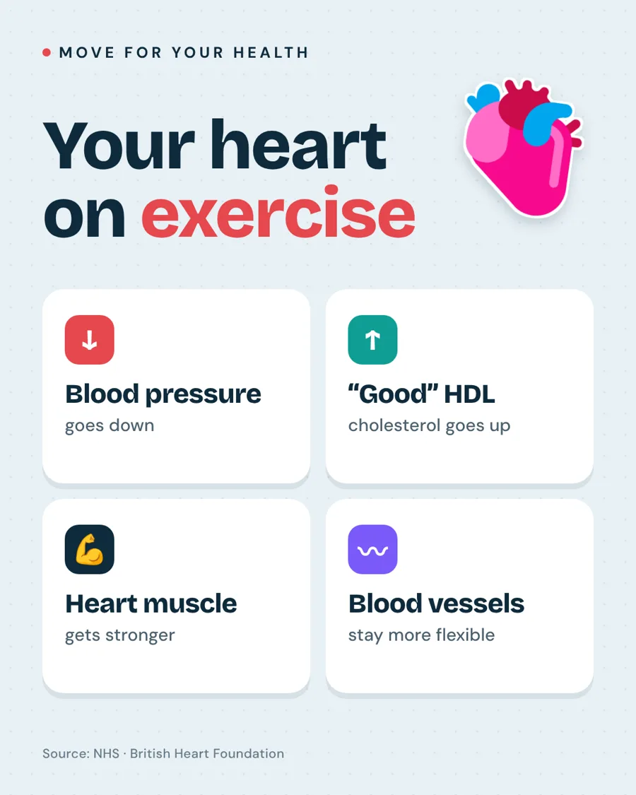
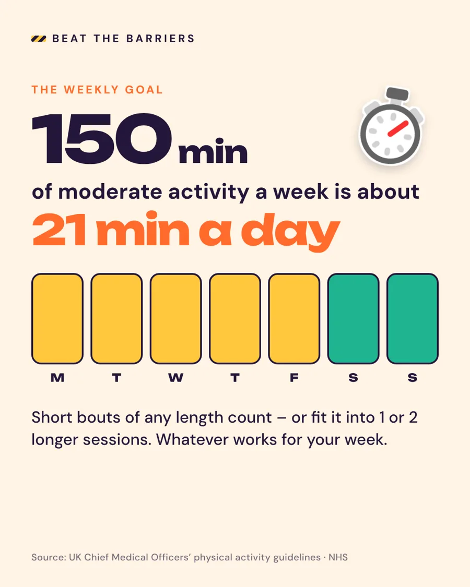
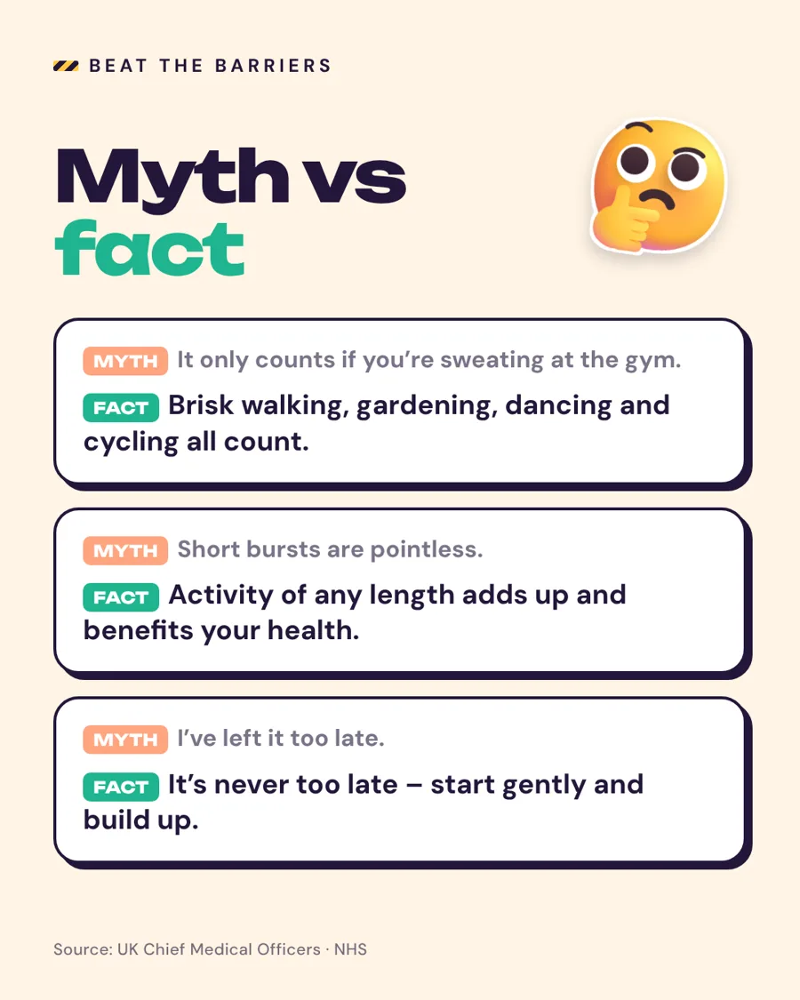
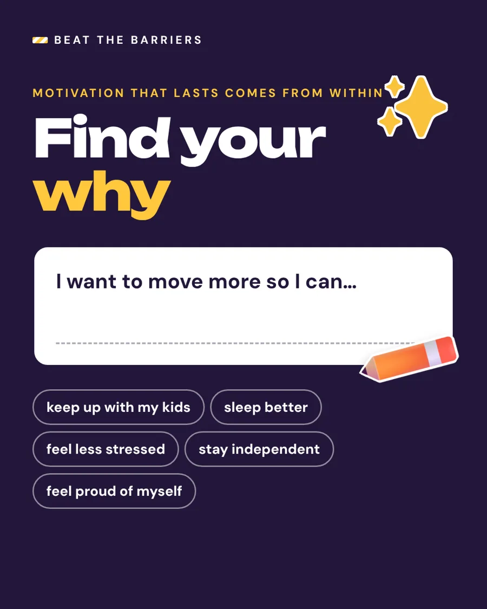

Move more.
Feel better.
Every day.
Friendly, evidence-based tips, free health tools and online classes – built around real London life. Every fact comes with its source.
How long have you been active today?
Walking to the Tube counts too.
What did you do?
Pick the main one.
How are you feeling today?
Be honest – there’s no wrong answer.
What would you like help with?
We’ll point you to the right place.
🔒 Your answers stay on this device.
Pick a topic
Bite-sized guides based on NHS and UK government advice – the same content you know from our Instagram.
Healthy Lifestyle
Health is more than not being ill. Small, steady habits for body, mind and social life add up to a better day…
7 guidesHealthy Eating
No fads, no rules you can’t keep. The UK Eatwell Guide in plain English, plus easy swaps for real…
7 guidesPhysical Activity
How much should you really move? The UK guidelines made simple, and ways to fit activity into a busy London…
7 guides
Move for Your Health
Movement is medicine. What being active does for your heart, blood sugar, mind, bones, back and lungs – and…
7 guidesBeat the Barriers
No time, no money, no confidence? Six common barriers to getting active – and a realistic fix for each…
Myth or fact?
Think you know your health facts? Test yourself – every answer links to the evidence.
Our essential guides

What does a healthy lifestyle really mean?
Health isn’t just the absence of illness. Here’s the full picture – and the everyday habits that make the biggest difference.

Is your plate actually balanced? The Eatwell Guide explained
The UK’s official healthy-eating model in plain English – food groups, easy swaps, nutrients and hydration.

How much should you really move?
The UK Chief Medical Officers’ guidelines for adults, explained – plus the benefits, the 3 types of activity, and when to pause.

Movement is medicine
What being active does inside your body – for your heart, blood sugar, mind, bones, back and lungs.

What’s stopping you? 6 barriers and how to beat them
No time, no money, too old, the kids, boredom or nerves – a realistic fix for each.
Know your numbers
Quick, private calculators based on NHS, NICE and UK Chief Medical Officers’ guidance.

BMI calculator
Metric or stones & pounds, with NICE ethnicity-adjusted ranges.
Waist-to-height ratio
Keep your waist to less than half your height.
Weekly activity tracker
Log your minutes and watch your ring fill to 150.

Alcohol unit counter
Pints, glasses and shots – how many units is your week?
Water tracker
Tap a glass each time you drink. Aim for 6–8.
5 A Day counter
Count your fruit and veg portions today.
Train with us, from anywhere in London
Short, friendly online sessions at times that fit around work, school runs and the commute.

Walk & Talk Coaching
A guided brisk-walk session by phone or video – join from your local park or the Thames Path.
See times →Strength Basics
Bodyweight strength for all major muscle groups. No kit needed, just a chair and some floor space.
See times →
Mobility & Stretch
Gentle flexibility and balance work to ease stiffness after a day at the desk.
See times →Fresh from the feed

The 4 parts of Total Fitness
Physical, mental, social and medical – how balanced are yours?

Swap this, for that
Four easy food swaps that make a real difference.

Mix all 3 types of activity
Aerobic, strength, flexibility & balance – which one is missing from your week?

Your heart on exercise
Blood pressure down, “good” cholesterol up – what activity does for your heart.

150 minutes a week is about 21 minutes a day
Short bouts count – or fit it into one or two longer sessions.

Myth vs fact: exercise edition
Does it only count at the gym? Are short bursts pointless? Is it too late?

Find your why
Motivation that lasts comes from within. Finish the sentence: “I want to move more so I can…”

You don’t have to do it alone: your support team
GP, dietitian, physiotherapist, counsellor – who does what, and where to find trusted information.
Follow us on Instagram
New tips every day, plus behind-the-scenes from our classes.
One small win, every week 💌
A short email with one tip, one tool and one class to try. No spam, unsubscribe any time.